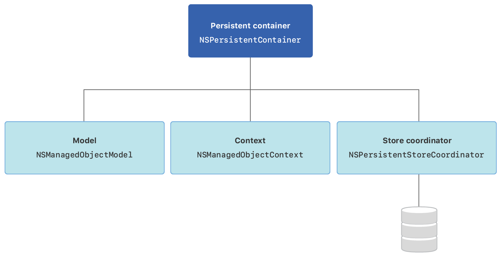

1 2 3 4 5 NSPersistentContainer NSManagedObjectContext NSFetchRequest entity

获取帖子并展示
主要步骤
构建模型
创建数据管理类CoreDataManager
创建VM中间层对象
操作Sqlite3 生成假数据
视图获取并渲染
Post 实例数据模型, (添加帖子 entity 实例）
1 2 3 title: String body: String isPublished: Boolean //Default true
设置Post实例的 Codegen （码元） 为 class Definition （类定义）, 便于数据实例模型扩展
创建CoreDataManager 数据管理类
1 2 3 4 5 6 7 8 9 10 11 class CoreDataManager static let shared = CoreDataManager (moc: NSManagedObjectContext .current) var moc: NSManagedObjectContext private init (moc: NSManagedObjectContext ) { self .moc = moc } }
扩展NSManagedObjectContext获取应用的 context
1 2 3 4 5 6 7 extension NSManagedObjectContext static var current: NSManagedObjectContext { let appDelegate = UIApplication .shared.delegate as ! AppDelegate return appDelegate.persistentContainer.viewContext } }
添加获取帖子方法, （创建NSFetchRequest请求，并调用）
1 2 3 4 5 6 7 8 9 10 11 12 func getAllPosts () Post ] { var posts = [Post ]() let request: NSFetchRequest <Post > = Post .fetchRequest() do { posts = try self .moc.fetch(request) } catch let error as NSError { print (error.localizedDescription) } return posts }
创建ViewModle层, 响应视图数据渲染
1 2 3 4 5 6 7 8 9 10 11 12 13 14 15 16 17 18 19 20 21 22 23 24 25 26 27 28 29 30 31 32 33 34 35 import Foundationimport Combineclass PostListViewModel : ObservableObject @Published var posts = [PostViewModel ]() func fetchAllPosts () DispatchQueue .main.async { self .posts = CoreDataManager .shared.getAllPosts().map (PostViewModel .init ) } } } class PostViewModel var post: Post init (post: Post ){ self .post = post } var title: String { self .post.title ?? "" } var body: String { self .post.body ?? "" } var published: Bool { self .post.isPublished } }
进入CoreData 数据库，查看数据
查看数CoreData 数据库地址 print(storeDescription.url)
sqlit3操作查看数据, 并插入几条模拟数据
1 2 3 4 5 6 7 8 9 10 11 12 13 14 15 16 17 18 sqlite3 CoreDataSimple .sqlite .tables .schema ZPOST INSERT INTO ZPOST (ZTITLE ,ZBODY ) VALUES ('Hello Core Data' ,'Body' );INSERT INTO ZPOST (ZTITLE ,ZBODY ,ZISPUBLISHED ) VALUES ('Hello Core Data' ,'Body' ,1 );SELECT * FROM ZPOST ;
在 view 视图获取并展现帖子数据1 2 3 4 5 6 7 8 9 10 11 12 13 14 15 struct ContentView : View @ObservedObject var listVM = PostListViewModel () var body: some View { VStack { List (listVM.posts, id: \.title){ item in Text ("\(item.title)" ) } .onAppear{ self .listVM.fetchAllPosts() } } } }
添加新帖子
主要步骤
创建添加帖子的视图
构建添加帖子的VM模型， 连接视图逻辑，和保存CoreData数据
在CoreData中添加保存持久化
创建添加的视图，AddPostView
1 2 3 4 5 6 7 8 9 10 11 12 13 14 15 16 17 18 19 20 21 struct AddPostView : View @Environment (\.presentationMode) var presentationModel @ObservedObject private var addPostVM = AddPostViewModel () var body: some View { VStack { TextField ("Title" , text: $addPostVM.postTitle) TextField ("Body" , text: $addPostVM.postBody) Button ("Save" ) { let saved = self .addPostVM.savePost() if saved { self .presentationModel.wrappedValue.dismiss() } } } .padding() } }
添加view+extension包裹contentView，并在contentView添加sheet弹出添加帖子页面。
1 2 3 4 5 6 7 8 9 10 11 12 13 14 15 16 17 18 19 20 21 22 23 24 25 26 27 extension View func embedInNavigationView () View { NavigationView { self } } } @State private var isPresented: Bool = false VStack { List (listVM.posts, id: \.title){ item in } .sheet(isPresented: $isPresented, onDismiss: { }) { AddPostView () } } .navigationBarTitle("Posts" ) .navigationBarItems(trailing: Button ("AddPost" ){ self .isPresented = true }) .embedInNavigationView()
创建AddPostViewModel
视图层调用vm层的savePost方法，该方法操作 CoreDataManager 保存数据持久化。
1 2 3 4 5 6 7 8 9 10 11 12 13 14 15 16 17 18 19 20 21 22 23 24 25 26 27 28 29 30 31 import Foundationimport CoreDataclass AddPostViewModel : ObservableObject var postTitle: String = "" var postBody: String = "" private var post: Post { let post = Post (context: CoreDataManager .shared.moc) post.postId = UUID () post.title = postTitle post.body = postBody return post } func savePost () Bool { do { try CoreDataManager .shared.savePost(post: post) return true } catch { print (error.localizedDescription) } return false } }
CoreDataManager 中保存帖子
1 2 3 4 5 6 7 8 9 func savePost (post: Post) throws { self .moc.insert(post) try save() } private func save () throws { try self .moc.save() }